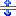
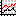
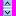

Right click the charting
control and select the Add\Delete Tools
menu item.
This displays the Add\Delete
Tools configuration dialog
Select the instance of
the charting tool that you do not require from the list box beneath the
buttons.
Click the Delete
button.
The following charting tools are provided:

CursorTool: This is a horizontal and/or vertical line
that you associate with a specific series, which you can use
as follows:
Either drag these around
the chart manually, in which case their current position (X and Y values)
are reported via the associated property spider
Or use the associated spider
to drive (reposition) these lines instead, in which case this tool can
provide limit lines to specify the required or desired maximum or minimum
limit for a charted series.
Tip: This tool
should only be used for Line and XYPlot charting controls; however it
does not work well for time based charts.
CursorTool configuration:
this describes how to display the configurable settings for an instance
of the CursorTool charting tool and the more important settings.
If necessary, right click
the charting control and select the Add\Delete
Tools menu item.
This displays the Add\Delete
Tools configuration dialog
Select the instance of
the CursorTool
that you want to edit from the list box beneath the buttons.
The Cursor Tool Settings
are displayed in the right hand pane for the selected instance of this
tool.
The
Active checkbox allows you to show (if checked) or hide (if cleared)
this tool from this charting control.
Specify the Series that this tool should be associated
with from this list box.
Note: This
tool is ONLY able to retrieve the values for this series.
Specify whether
you want a Vertical, Horizontal or Both (vertical and horizontal) line
to appear on the chart for this tool from the Style
list box.
If necessary, you
can provide a label for this cursor, by adding an Annotation
charting tool and specifying its zero based index in the Annotation
list box. Click for more details:
Labeling a cursor means is that the text specified by
this Annotation tool follows this
cursor so that users can easily see which cursor is being used. This is
typically needed when you have a large number of cursors in a chart.
The zero based index of the Annotation tool is the position
of this Annotation tool within the list of ALL the added charting tools
added to this chart. For instance, if you have added a CursorTool, AxisArrow
and Annotation tool to a chart, then the zero based index specified for
this Annotation tool is 2.
Note: If you
are using an Annotation tool to
label your cursor, please ensure that its Position
parameter is set to Custom; otherwise
its text will NOT follow the cursor.
Specify the available
display options for these lines.
Specify the options
that configure the display of the actual lines, such as the color and
style and thickness of the lines. Alternative clear the Visible
checkbox to ONLY use the default settings.
Configuring the associated property spider:
all the instances of the CursorTool for a charting control can be configured
using the Cursors property spider,
within the Data sub-category of
properties of the relevant charting control.
Ensure that the required
charting control is currently selected in the graphic form.
Open the Spider
Configuration window and if necessary display the properties pane
on the right.
Open the Data
sub-category of properties for this charting control.
Right click the Cursors
property and select the Show Property
Spider menu item.
The Cursors property
spider for this charting control is displayed in the central spider workspace
pane.
Note: Each
CursorTool instance is described by the instance name CursorZ, where Z
is a zero-based index
Each instance of the CursorTool provides the following
four Inputs: these can be externally
driven (specified).
CursorZ [Series]:
the series of this charting control that is associated with this instance.
CursorZ [Visible]:
whether the cursor associated with this instance is hidden (False) or
displayed (True) in the chart.
CursorZ [XValue]:
the required X (horizontal value) for this cursor in the chart.
CursorZ [YValue]:
the required Y (vertical value) for this cursor in the chart.
Each instance of the CursorTool provides the following
two Outputs: these can be displayed
on a graphic form or used to drive another value etc.
CursorZ [XValue]:
the current X (horizontal value) of this cursor in the chart.
CursorZ [YValue]:
the current Y (vertical value) of this cursor in the chart.

DrawLines: This allows your users to draw lines on
the chart at runtime, which they can then reposition and/or rotate and/or
delete these lines, as follows:
To draw a line:
click and drag in the direction of the required line.
Note: By default
the left mouse button is used to draw lines, although this is a configurable
setting.
To reposition a line:
click the line and move it to the required location.
To rotate a line:
click the required anchor (end box) and move it around.
To delete a line:
click the line and press the DELETE key.
DrawLines
configuration:
this describes how to display the configurable settings for an instance
of the DrawLines charting tool and the more important settings.
If necessary, right click
the charting control and select the Add\Delete
Tools menu item.
This displays the Add\Delete
Tools configuration dialog
Select the instance of
the DrawLines
that you want to edit from the list box beneath the buttons.
The DrawLine Tool Settings
are displayed in the right hand pane for the selected instance of this
tool.
The
Active checkbox allows you to show (if checked) or hide (if cleared)
this tool from this charting control.
Specify the Series that this tool should be associated
with from this list box.
If necessary, specify
which Button should be used to
draw these lines.
Note: do not
select the Right mouse button.
Check the Enable Draw checkbox to allow your users
to draw lines on the chart.
Note: You
can ONLY draw line for ONE DrawLines instance at a time, therefore if
multiple instances have this checkbox enabled ONLY lines for the last
instance can be drawn.
Check the Enable Select checkbox to allow your
users to select the lines on the chart, to reposition, rotate and/or delete
them.
Specify the options
that configure the display of the actual lines, such as the color and
style and thickness of the lines. Alternative clear the Visible
checkbox to ONLY use the default settings.
Configuring the associated property spider:
all the instances of the DrawLines for a charting control can be configured
using the DrawLines property spider,
within the Data sub-category of
properties of the relevant charting control.
Ensure that the required
charting control is currently selected in the graphic form.
Open the Spider
Configuration window and if necessary display the properties pane
on the right.
Open the Data
sub-category of properties for this charting control.
Right click the DrawLines property and select the Show Property
Spider menu item.
The DrawLines property
spider for this charting control is displayed in the central spider workspace
pane.
Note: Each
DrawLines instance is described by the instance name DrawLineZ, where
Z is a zero-based index.
Each instance of the DrawLines tool provides the following
four Inputs: these can be externally
driven (specified).
DrawLineZ [EnableDraw]:
to enable (True) or disable (False) your users to draw lines on the chart.
Note: You
can ONLY draw line for ONE DrawLines instance at a time, therefore if
multiple instances have this checkbox enabled ONLY lines for the last
instance can be drawn.
DrawLineZ [DataSet]:
specify dataset data to automatically create and /or dynamically configure
these lines. This dataset requires the following four columns: X1, Y1,
X2, Y2 which are the coordinates of the start and end points of each line.
DrawLineZ [EnableSelect]:
to allow (True) or prevent (False) the selection of the drawn lines on
the chart, to reposition, rotate and/or delete them.
DrawLineZ [Visible]:
whether you can (True) or cannot (False) see the drawn lines on the chart.
Each instance of the DrawLines provides the following
two Outputs: these can be displayed
on a graphic form or used to drive another value etc.
DrawLineZ [DataSet]:
this provides a dataset that provides the start and end points of the
drawn lines. This dataset provides the following four columns: X1, Y1,
X2, Y2 which are the coordinates of the start and end points of each line.

AxisArrow: This allows your users to add arrows to
axes which can be used for scrolling horizontal axes left/right or scrolling
vertical axes up/down.
AxisArrow configuration:
this describes how to display the configurable settings for an instance
of the AxisArrow charting tool and the more important settings.
If necessary, right click
the charting control and select the Add\Delete
Tools menu item.
This displays the Add\Delete
Tools configuration dialog
Select the instance of
the AxisArrow
that you want to edit from the list box beneath the buttons.
The AxisArrow Tool Settings
are displayed in the right hand pane for the selected instance of this
tool.
The
Active checkbox allows you to show (if checked) or hide (if cleared)
this tool from this charting control.
Specify the Axis that this tool should be associated
with from this list box.
Specify whether
you require a scrolling arrow on one or both sides of this axis by selecting
the required option from the Position
list box, as follows:
Start:
This ONLY adds a scrolling arrow to the:
Top end of
a vertical axis (e.g. Left or Right axis)
Left end
of a horizontal axis (e.g. Top or Bottom axis)
End:
This ONLY adds a scrolling arrow to the:
Bottom end
of a vertical axis (e.g. Left or Right axis)
Right end
of a horizontal axis (e.g. Top or Bottom axis)
Both:
This adds a scrolling arrow to both ends of the selected Axis.
If necessary, specify
the Length of the arrow/s, in
pixels, that are displayed on the specified Axis.
A Length up
to 8 allows you to create an arrowhead of increasing size. For instance:
The following arrow head size is displayed when Length
is 8:
A Length above
8 allows you to configure the size of its tail. For instance:
The following arrow tail size is displayed when Length
is 16:
If necessary, configure
the required scrolling options that are used when a user clicks on the
scrolling arrow/s.
Annotation: This allows you to add text to a chart
and change its position, size and/or formatting.
Annotation
configuration:
this describes how to display the configurable settings for an instance
of the Annotationcharting tool
and the more important settings.
If necessary, right click
the charting control and select the Add\Delete
Tools menu item.
This displays the Add\Delete
Tools configuration dialog
Select the instance of
the Annotation
that you want to edit from the list box beneath the buttons.
The settings for this Annotation
tool are displayed in the right hand pane.
The
Active checkbox allows you to show (if checked) or hide (if cleared)
this tool from this charting control.
Specify the Text that you want this tool to display
on the chart.
Specify the Position of this Text
on the chart, as follows:
Either use Auto
to select one of the four preset chart positions.
Or check the Custom checkbox and manually provide
the initial Left and Top
coordinates of this text box.
Note: If you
are using this Annotation tool
to label a CursorTool then ensure
that its Position parameter is
set to Custom, otherwise the text
box will NOT follow the cursor.
If necessary, specify
the options that configure the display of this text, such as its Font, background and text color
and Text Alignment.
If necessary, specify
the options that configure the appearance of the text
box, such as Round Frame or Transparent, in which case specify the
degree of Transparency, with 0
being entirely transparent and 255 being entirely visible.
If necessary, specify
the size of this text box, by
checking the Custom checkbox and
manually providing the Height
and Width dimensions of this text
box, in pixels.

 To add an instance of a charting tool:
To add an instance of a charting tool: